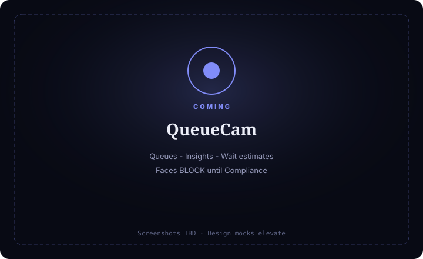

QueueCam
Queue & wait ops — anonymous headcount and wait estimates; Faces BLOCK until Compliance.
For floor leads who need line length and staffing insights — helpful, not surveilly.

What it does
QueueCam runs queue/wait ops: Live, Queues, Insights, Automations. Day one is anonymous headcount + wait estimate only.
Faces / re-id may appear in UI only as Compliance-gated — BLOCK until Compliance clears — never default-on, never wizard-enabled.
Wait time is always labeled an estimate.
Capabilities
Day-one surface vs Advanced / gated — from Clarity GH Pages pack.
Day-one surface
Live
Day oneQueue overlay + headcount / wait chips
Queues
Day oneLine regions board
Insights
Day oneStaffing / length trends (anonymous)
Automations
Day oneLong-queue Notify (dry-run)
Advanced / gated
Faces / re-id / customer identity
BLOCKBLOCK until Compliance clears
Temp-enable faces for testing
OutForbidden
How to use it
First-run (outline)
Add feed
—
Draw queue region(s)
—
Headcount / wait proof
—
Step E
Notify me (dry-run).
Open Features
Only to see Faces BLOCK stamp — do not enable.
Daily loop (outline)
Live line length + wait estimate
—
Queues board adjustments
—
Insights for staffing
Anonymous only.
Automations after dry-run
—
Badge
Long-queue / cam / notify fail; Faces BLOCK attempts logged.
Honesty / trust
Queue & wait ops — anonymous headcount and wait estimates; Faces BLOCK until Compliance.
- Anonymous day one — headcount + wait estimate only.
- Faces BLOCK — Compliance-gated; never wizard-enabled; never default-on.
- Wait = estimate forever — label honesty.
- Don’t joke about tracking customers’ faces.
- Compliance biometric pack must clear before any Ready identity chrome.
Screenshots
Screenshots TBD from Design mocks — capture when Design elevates.
Capture when Design elevates
Anonymous day one; Faces BLOCK
Get started
Stub page — full elevate after Design screenshots. Honesty locks already live.